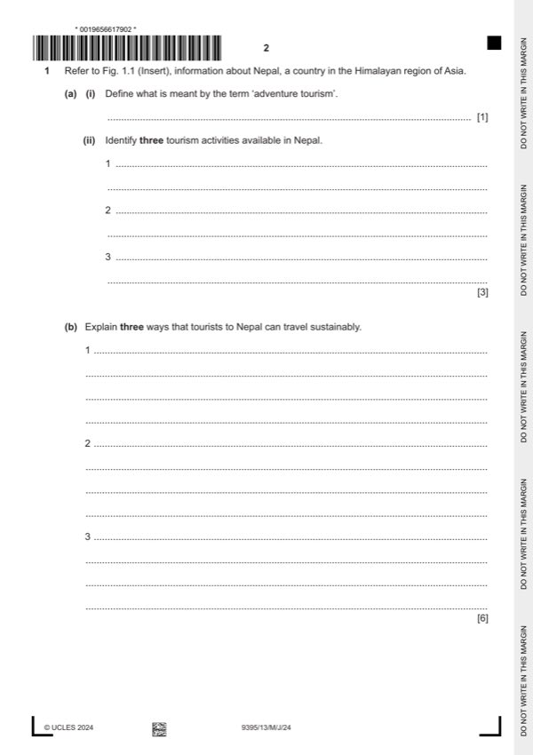

Question 1

Original paper page 2
Part 1(a)(i) — solution
Define what is meant by the term ‘adventure tourism’. 1
Award one mark for a correct definition.
A form of specialised tourism where the participant takes part in adventurous or
possibly risky activities.
Accept any other reasonable response.
Mark points
- Include the ideas shown in the solution above.
Part 1(a)(ii) — solution
- Mountaineering
- Rafting
- Trekking
- Adventure
- Religion
- Cultural experiences
- Food
Mark points
- Mountaineering
- Rafting
- Trekking
- Adventure
- Religion
- Cultural experiences
- Food
Part 1(b) — solution
- Cycles/bikes (1) may be used as they can go over a variety of terrains and
- River travel (1) using boats/canoes would reduce the carbon footprint. (1)
- Bus travel (1) allows environmental impacts to be minimised and allows
- Cable cars (1) through hilly areas stop exploitation of areas through road
- Trains (1) connecting Nepal with other places with reduced carbon
Mark points
- Cycles/bikes (1) may be used as they can go over a variety of terrains and
- River travel (1) using boats/canoes would reduce the carbon footprint. (1)
- Bus travel (1) allows environmental impacts to be minimised and allows
- Cable cars (1) through hilly areas stop exploitation of areas through road
- Trains (1) connecting Nepal with other places with reduced carbon
Part 1(c) — solution
- People are more active into their 50’s and 60’s (1) so they are more likely to
- People who are more active to an older age (1) means that destinations
- Provision of a greater range of adventure tourism activities for all ages (1)
Mark points
- People are more active into their 50’s and 60’s (1) so they are more likely to
- People who are more active to an older age (1) means that destinations
- Provision of a greater range of adventure tourism activities for all ages (1)
Part 1(d) — solution
- Education for local people and for tourists so there is an
- Liaising with other tourism authorities such as tour operators or regional
- Adverts etc. to draw attention
- Assistance with local planning of tourist sites
- Description/explanation of possible programmes such as assisting tour
- Development of training and education strategies which will operate within
- Liaison with local government and councils to help provide information and
- Put into place via tourism offices strategies which will help maintain the
- Comments about the potential value of these strategies as to which may be
- Placing responsibility onto local people is often a negative process as some
Mark points
- Education for local people and for tourists so there is an
- Liaising with other tourism authorities such as tour operators or regional
- Adverts etc. to draw attention
- Assistance with local planning of tourist sites
- Description/explanation of possible programmes such as assisting tour
- Development of training and education strategies which will operate within
- Liaison with local government and councils to help provide information and
- Put into place via tourism offices strategies which will help maintain the
- Comments about the potential value of these strategies as to which may be
- Placing responsibility onto local people is often a negative process as some